Whatsapp
993691671
Whatsapp
993691671
Proyectos Pequeños
Ubicado en: AA.HH. San Francisco de Cayran-Calle 10 Mz. C Lote 31-San Martín de Porres

Proyectos Grandes
Ubicado en: Avenida Víctor Andrés Belaúnde 147

Proyectos Industriales
Distritos apoyados: San Isidro, Miraflores, Surco.
Beneficios para MI PROYECTO

Ahorro

-Estaciones de Servicio GNV
-En costos Almacenamiento
-En gastos de Mantenimiento de Artefactos
-En costos por Stock
Alta Disponibilidad

-Es suministrado a través de tuberías, sin interrupciones
-Atención 24/7/365
-Distintos Canales de Comunicacion Directa
Galería de Videos

Puntos Clave
5 puntos a considerar en tu proyecto de gas natural...
¿Miedo de usar Gas Natural en casa?
Resolviendo dudas sobre el riesgo de tener gas natural en casa.
Instalación de Punto Adicional de Gas Natural
Goza de los beneficios económicos que te brinda el gas natural.
¿Gas Natural?
¿Qué es?, ¿Cómo se obtiene? y ¿Cómo se utiliza en nuestro día a día?
Avance de Nuestros Proyectos

Proyecto Perforación Exploratoria y Desarrollo en tres locaciones - Lote 88
Proyecto Loop Costa II
Proyecto Planta Compresora KP 127
Proyecto Nitratos del Perú
Complejo Petroquímico en San Juan de Marcona
Proyectos Lima-Callao
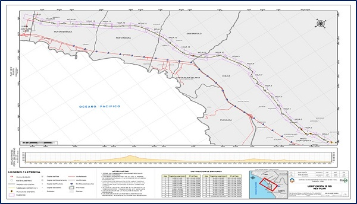
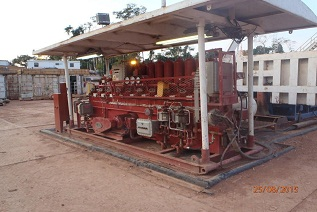
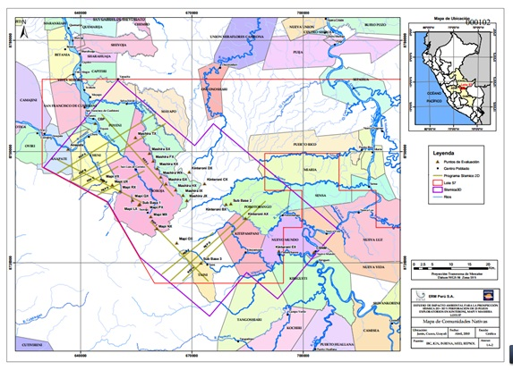
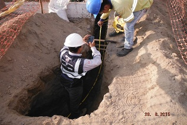
Proyecto Loop Costa II
La ampliación del Loop Costa contempla la instalación de un ducto de 24” de diámetro paralelo al ducto de 18” de diámetro del Sistema de Transporte de GN. El Loop Costa II tendrá una interconexión con el Loop Costa I en la estación de Chilca, una válvula de bloqueo intermedia y terminará en una trampa de recepción que será reubicada de la estación de Chilca al City Gate de Lurín; la cual a su vez se interconectará al ducto de 18” de diámetro en el cabezal de ingreso de los filtros en el City Gate.
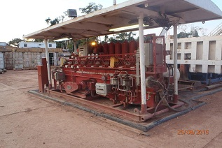
Proyecto Planta Compresora KP 127
La tercera ampliación comprende la instalación de una nueva planta de compresión en la localidad de Kepashiato y la ampliación del Loop Costa. La planta de compresión de Kepashiato contempla la instalación y operación de una Planta Compresora con 4 Turbo-Compresores (3 en operación y uno en reserva) aumentando la capacidad de transporte de GN en 310 MMPCD y de acuerdo al crecimiento de la demanda un Turbo-Compresores adicional más (4 en operación y 1 en reserva).
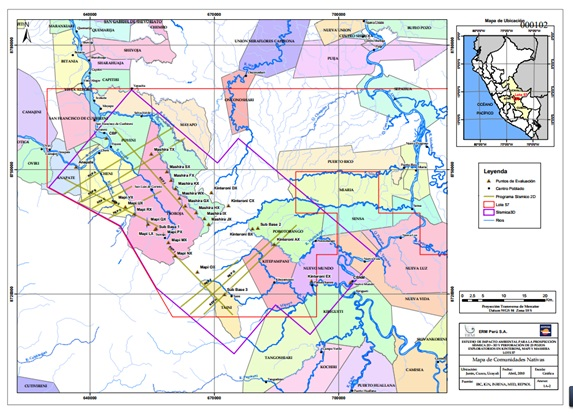
Proyecto Nitratos del Perú
El proyecto contará con una planta para producir Amoniaco, una planta para producir Nitrato de Amonio y sistemas auxiliares para el funcionamiento de estas plantas. Este proyecto también considera la construcción y operación de una plataforma marítima.
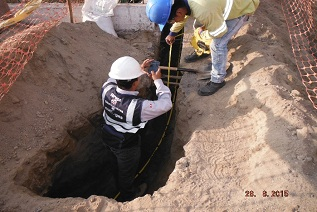
Sistema de Distribución de Gas Natural en Lima y Callao
El sistema de distribución de gas natural en Lima y Callao está compuesto por un ducto principal y ductos secundarios. La tubería principal consiste en una tubería de acero de 62 km. de longitud y 20 pulgadas de diámetro la cual une Lurín con Ventanilla atravesando 14 distritos. Más, la ampliación de dicha
Proyectos Provincia
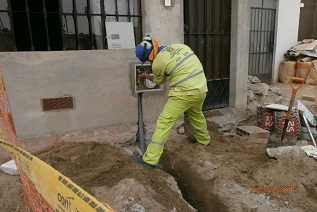
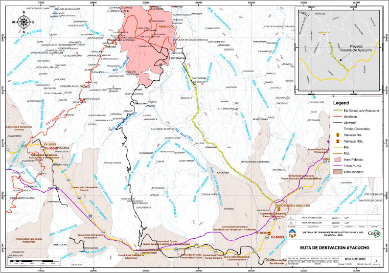
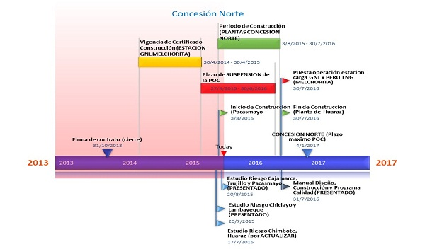
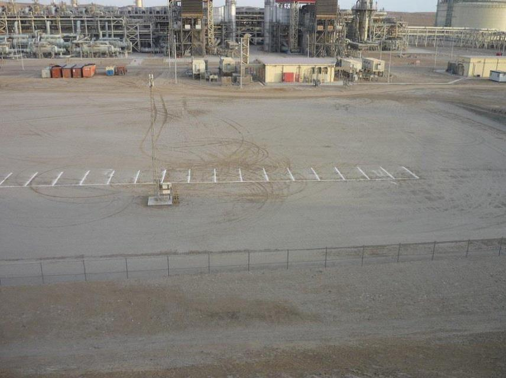
Complejo Petroquímico en San Juan de Marcona
Este proyecto consiste en la construcción y operación de un complejo petroquímico en el distrito de San Juan de Marcona. Esta planta producirá amoníaco y urea, para atender a los mercados de fertilizantes en América del Sur y la costa oeste de América Central. Comprende también la construcción de un muelle para el despacho por vía marítima de sus productos.
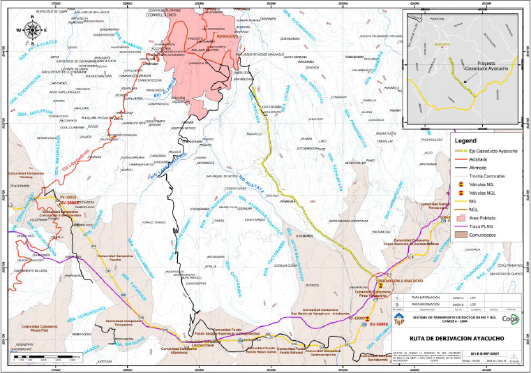
Proyecto Gasoducto de Derivación Principal a Ayacucho
Este proyecto contempla básicamente una derivación y el tendido de un gasoducto de aproximadamente 18.33 Km de longitud por 14” de diámetro en la región de Ayacucho el cual será construido con tubería de calidad API 5Lx70.
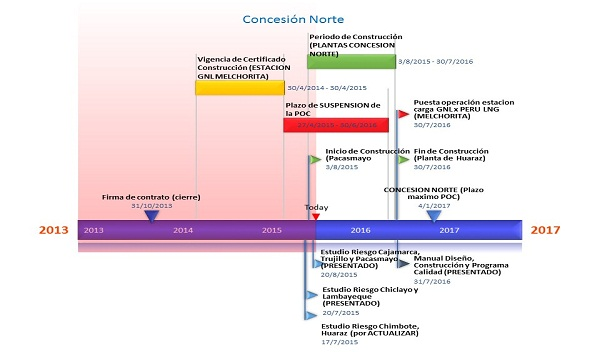
Masificación del uso de Gas Natural en las Ciudades Altos Andinas
El proyecto consiste en brindar el servicio de distribución de gas natural por red de ductos en las áreas de concesión, para lo cual se contempla la siguiente infraestructura: Componentes del proyecto: Transporte terrestre de Gas Natural Licuado (GNL) desde el punto de Suministro (Estación carga Perú LNG).
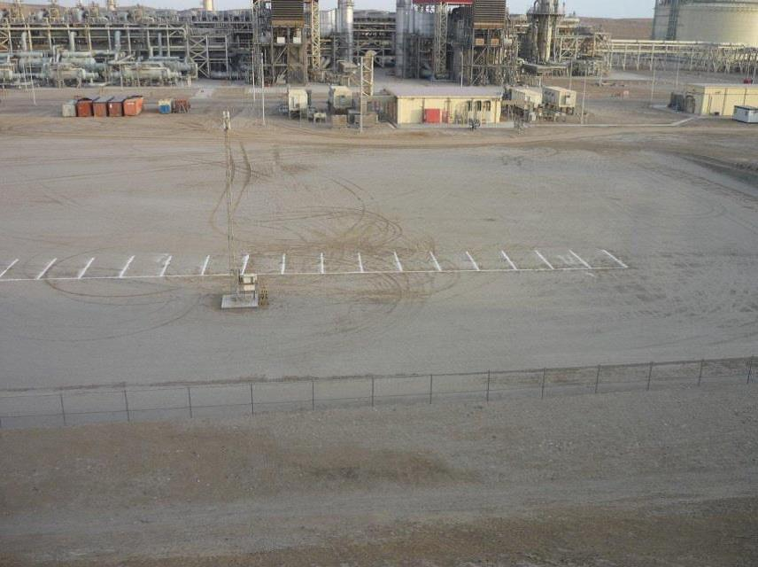